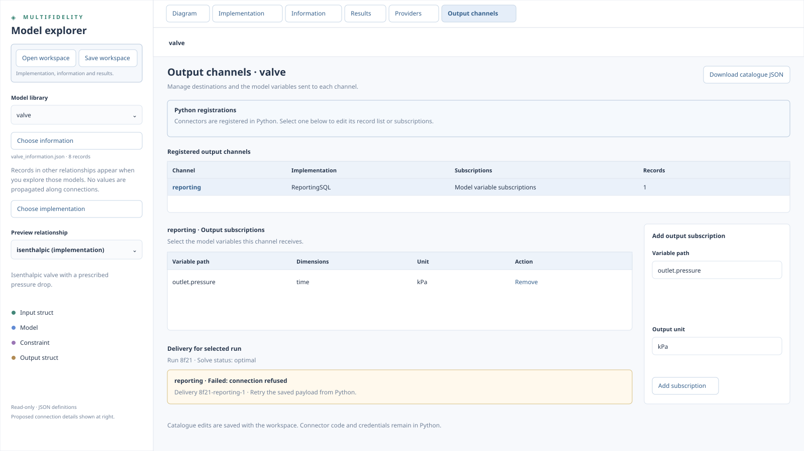

Feeds supply resources for a model
Revised 17 November 2026 · Feeds implemented; output channels remain proposed
External data enters through feeds. Each feed discovers the tags it can supply and reads their values in bulk. The registry combines those values with the resource metadata already held by the application, producing a fresh resource catalog.
A resource carries a tag, model variable path, value, units, trust and optional uncertainty. Some resources are selected as parameters to constrain a model. Fetching a resource does not automatically select it or fix a variable.
from pydantic import BaseModel
from multifidelity.model_language import FeedRegistry
class PlantConfig(BaseModel):
columns: dict[str, str]
class PlantFeed:
def __init__(self, config: PlantConfig, client):
self.config, self.client = config, client
def get_config(self) -> PlantConfig:
return self.config
def get_tags(self):
return tuple(self.config.columns)
def read(self, tags):
columns = self.config.columns
values = self.client.read_many([columns[tag] for tag in tags])
return {tag: values[columns[tag]] for tag in tags}
feeds = FeedRegistry()
feeds.register_feed("plant", PlantFeed(PlantConfig(columns={
"inlet_flow": "FT101", "pressure_measurement": "PT101",
}), client))
resources = feeds.read(resources)
feeds.describe().write_json("feeds.json")
Configuration stays typed in Python
Each feed defines its own Pydantic config model and returns it from get_config(). The registry serializes that configuration as JSON for storage and display. Runtime clients and credentials stay outside exported configuration.
The live FeedRegistry contains executable feed objects. Its FeedCatalog is a portable snapshot: each entry contains a name, provider_type, discovered tags and config. The provider_type field names the Python class for inspection; loading it never imports code. Tags are rediscovered for each read, so configuration or source changes can alter the next request.
Blocks, models and parameters
A block defines an interface and offers alternative formulations. A root block with a formulation selected at each participating occurrence defines a model. ModelCatalog stores those recursive choices; build_model() combines it with the root block to construct a live numerical instance.
ParameterCatalog records which resource tags constrain that model, including initial conditions and any replacements of canonical inputs. Selection, application and numerical solving remain separate operations. ResultsCatalog records the resulting numerical snapshot and its explicit solve status.
Connections have their own tabs
The Feeds tab lists registered feed types, configuration as JSON, and discovered tags. Configuration is editable; tags are read-only discovery snapshots refreshed by exporting a new catalog from Python. The other implemented tabs are Diagram, Model, Resources and Results.

Output channels remain a proposed addition. A channel would subscribe to variable paths and receive one dictionary through write(values) after a successful solve. Naming and formatting for its destination would stay in its Python code; a delivery failure would be reported separately from solve status.

WorkspaceCatalog bundles model_catalog, resources, results and optional feeds. These catalogs can be inspected offline. Re-execution requires the application to supply the registered feed classes and their runtime dependencies.
Feeds and the Feeds tab are implemented. Output channels and an automatic Simulation.solve() wrapper are not implemented.